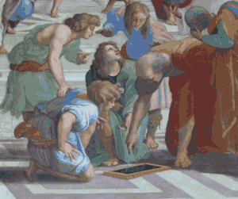
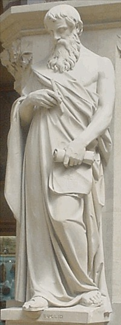

| Born | Approximately 330 B.C. |
| Died | Approximately 260 B.C. |
There are no known records of the exact date or place of Euclid's birth, and little is known about his personal life. We do know that during the reign of Ptolemy I he taught mathematics in Alexandria, Egypt, at the Alexandria library or "Museum", and that he wrote the most enduring mathematical work of all time, the Stoicheia or Elements, a thirteen volume work. This comprehensive compilation of geometrical knowledge, based on the works of Thales, Pythagoras, Plato, Eudoxus, Aristotle, Menaechmus and others, was in common usage for over 2,000 years.
An Arabian author, al-Qifti (d. 1248), recorded that Euclid's father was Naucrates and his grandfather was Zenarchus, that he was a Greek, born in Tyre and lived in Damascus. But there is no real proof that this is the same Euclid. In fact, another man, Euclid of Megara, a philosopher who lived at the time of Plato, is often confused with Euclid of Alexandria.

Euclid is often referred to as the "Father of Geometry." It is probable that he attended Plato's Academy in Athens, received his mathematical training from students of Plato, and then came to Alexandria. Alexandria was then the largest city in the western world, and the center of both the papyrus industry and the book trade. Ptolemy had created the great library at Alexandria, which was known as the Museum, because it was considered a house of the muses for the arts and sciences. Many scholars worked and taught there, and that is where Euclid wrote The Elements. There is some evidence that Euclid also founded a school and taught pupils while he was in Alexandria.
The Elements is divided into thirteen books which cover plane geometry, arithmetic and number theory, irrational numbers, and solid geometry. Euclid organized the known geometrical ideas, starting with simple definitions, axioms, formed statements called theorems, and set forth methods for logical proofs. He began with accepted mathematical truths, axioms and postulates, and demonstrated logically 467 propositions in plane and solid geometry. One of the proofs was for the theorem of Pythagoras, proving that the equation is always true for every right triangle. The Elements was the most widely used textbook of all time, has appeared in more than 1,000 editions since printing was invented, was still found in classrooms until the twentieth century, and is thought to have sold more copies than any book other than the Bible.
Euclid used an approach called the "synthetic approach" to present his theorems. Using this method, one progresses in a series of logical steps from the known to the unknown.
Euclid proved that it is impossible to find the "largest prime number," because if you take the largest known prime number, add 1 to the product of all the primes up to and including it, you will get another prime number. Euclid's proof for this theorem is generally accepted as one of the "classic" proofs because of its conciseness and clarity. Millions of prime numbers are known to exist, and more are being added by mathematicians and computer scientists. Mathematicians since Euclid have attempted without success to find a pattern to the sequence of prime numbers.
The Greek philosopher Proclus records that when Ptolemy I asked if there was an easier way to study geometry than The Elements, Euclid replied, "Sire, there is no royal road to geometry."
Axioms are statements that are accepted as true. Euclid believed that we can't be sure of any axioms without proof, so he devised logical steps to prove them. Euclid divided his ten axioms, which he called "postulates," into two groups of five. The first five were "Common Notions," because they were common to all sciences:

Campanus translated The Elements from Arabic to Latin, and the first printed edition appeared in Venice in 1482. The first English translation of The Elements was by the mathematician John Dee in 1570. Dee's lectures and writings revived interest in mathematics in England. His translation was from a Latin translation of an Arabic translation of the original Greek.
In 1733, an Italian mathematician named Girolamo Saccheri almost discovered non-Euclidean geometry. He had studied for years in a futile attempt to find a single error in Euclid's postulates. On the verge of a breakthrough, he gave up and published Euclid Cleared of Every Flaw. It would be about a hundred years before another viable geometry was invented.
In 1899, the German mathematician David Hilbert presented Foundations of Geometry, the first complete set of geometry axioms since Euclid.
Euclid also wrote Data, which contains 94 propositions, Phaenomena, concerning spherical astronomy, Caloptrics, about mirrors, Optics, the theory of perspective, and a work of music theory. In his works about optics, Euclid made light rays part of geometry, working with them as if they were straight lines. Many of the works ascribed to Euclid are no longer in existence or are incomplete.
The Greek number system made it hard to do calculations. Like the Roman number system, it was not a positional system, had no zero, and had only whole numbers. To compensate for this, they used graphical techniques using a compass and straightedge to produce geometric constructions. These became known as Euclidean Constructions and are described further in Euclidean Constructions - Tools and Rules
At age forty, Abraham Lincoln studied Euclid for training in reasoning, and as a traveling lawyer on horseback, kept a copy of Euclid's Elements in his saddlebag. In his biography of Lincoln, his law partner Billy Herndon tells how late at night Lincoln would lie on the floor studying Euclid's geometry by lamplight. Lincoln's logical speeches and some of his phrases such as "dedicated to the proposition" in the Gettysburg address are attributed to his reading of Euclid.
Lincoln explains why he was motivated to read Euclid: